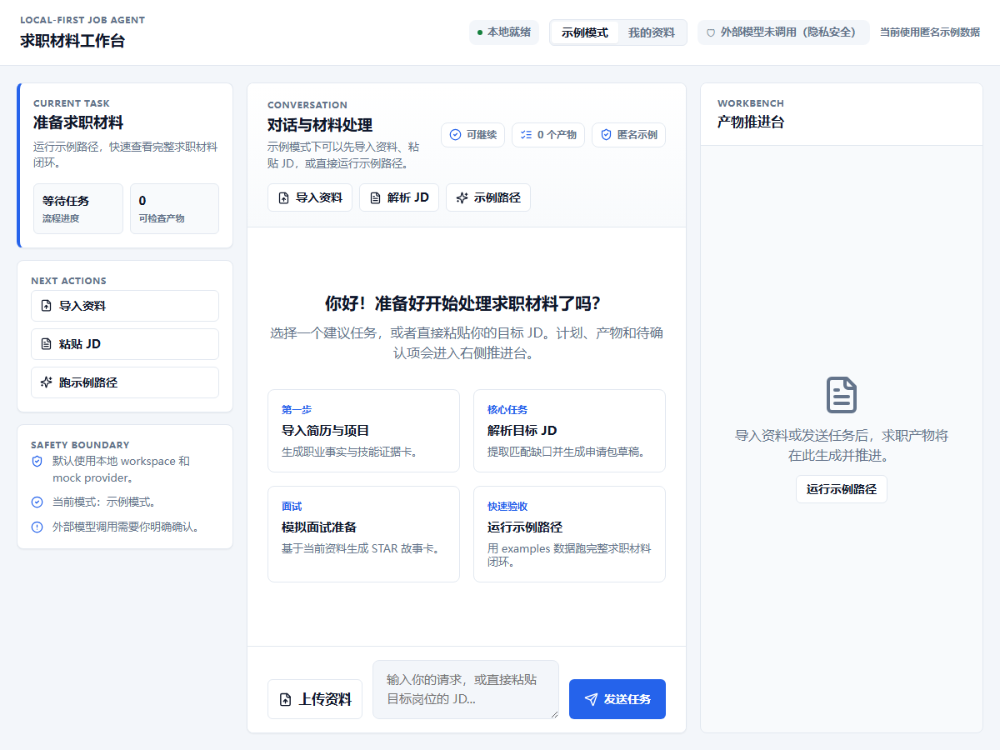
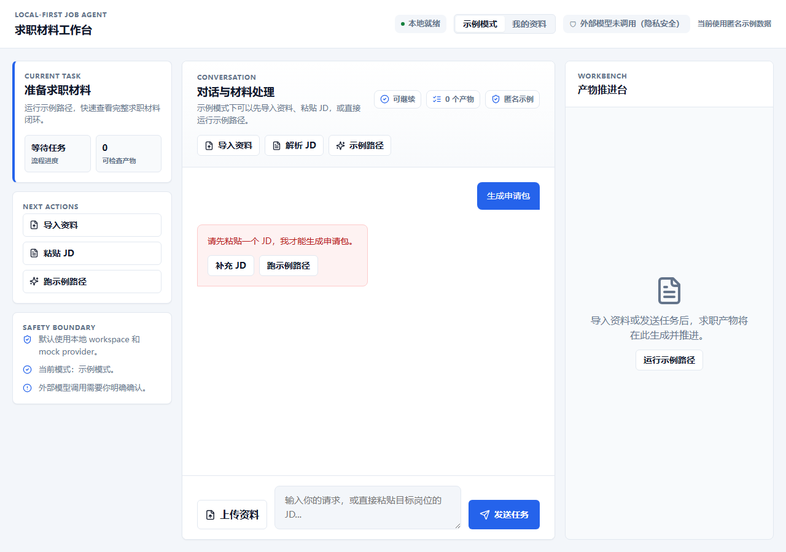
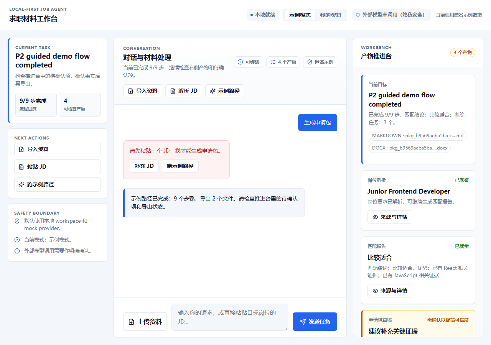
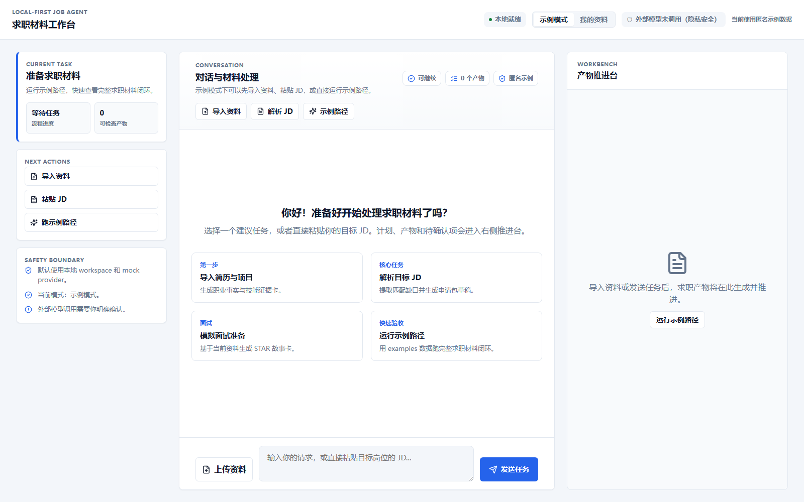
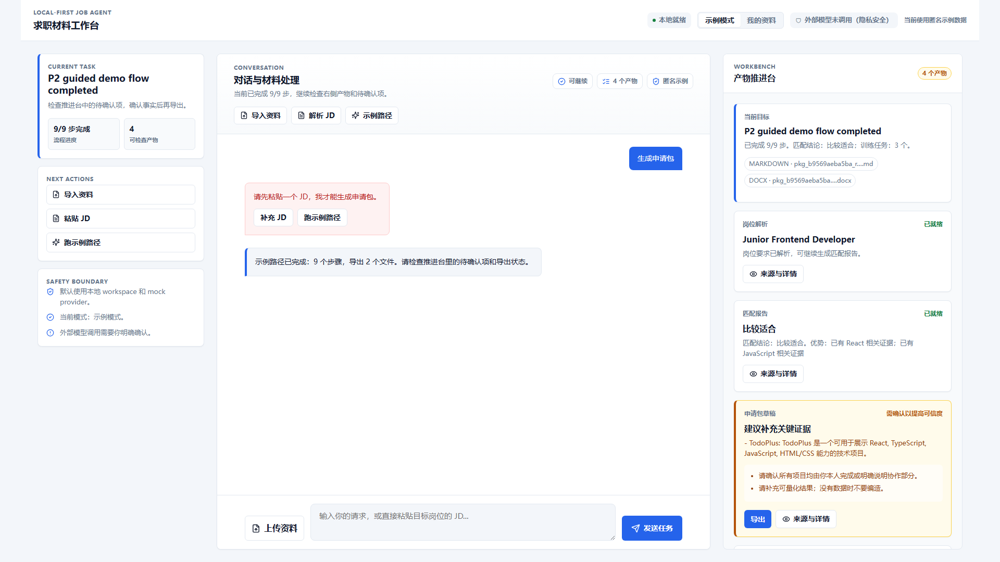
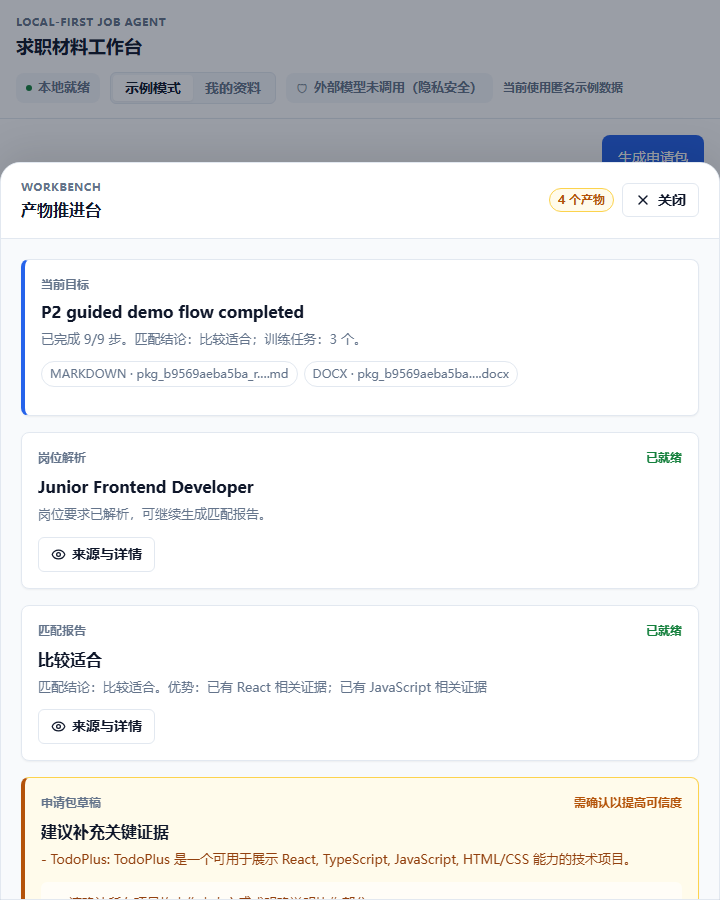
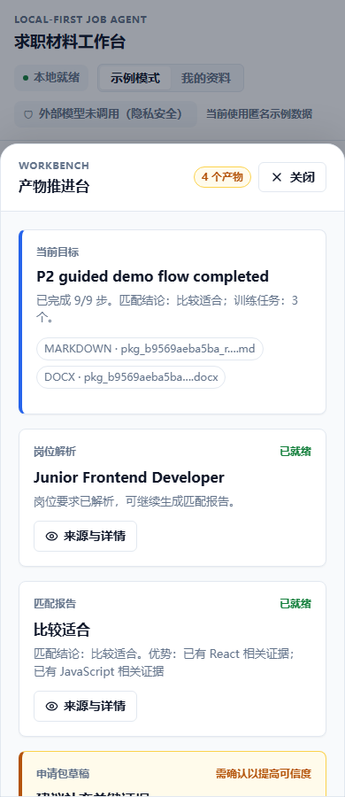

Step 1
打开 JobPilot 工作台
用户进入 Chatbox 后，应能立即判断这是一个求职工作台：对话区域用于输入任务和查看反馈，工作台区域承载当前阶段、产物和下一步。截图同时用于检查 provider 状态是否让用户误以为已经外呼。
- 可完成：查看当前工作台、识别下一步入口、确认默认未调用外部模型。
- 未证明：真实 provider 调用、真实个人资料导入。

p4_workbench_initial_1200.png自动化通过 人工体验未在本报告中认可
当前项目在本机完成了后端 pytest、前端生产构建和浏览器自动化截图验收。自动化路径覆盖 Chatbox 初始工作台、缺资料错误恢复、示例路径完成态、全尺寸桌面宽度、窄屏和移动宽度。
验收边界：本次使用本地 mock/示例路径和受控临时 workspace，不涉及真实 API Key、真实个人简历/JD、外部模型调用或人工主观认可。
| 项目 | 实际执行 | 结果 |
|---|---|---|
| 后端/领域 eval | .venv/bin/python -m pytest |
65 passed1 warning，耗时 57.41s |
| 前端生产构建 | npm --prefix apps/chatbox run build |
通过Vite 生产包生成成功 |
| 浏览器自动化 | CHROME_DEBUG_PORT=9237 chrome-win-headless about:blank |
通过启动本机 Windows Chrome headless 调试端口 |
| 截图采集 | node scripts/capture_p4_workbench_evidence.mjs |
通过CDP 驱动 Chatbox 并写入截图证据 |
| 层 | 当前实现 | 本次证据 |
|---|---|---|
| Chatbox 前端 | React + Vite 应用，运行在 127.0.0.1:5173，包含三栏工作台、建议任务、错误恢复、产物卡和响应式布局。 |
多视口截图和 npm build 通过。 |
| API 服务 | FastAPI 服务运行在 127.0.0.1:8000，承载 chat/workflow/artifact/export/provider 等接口边界。 |
pytest 覆盖 65 个测试用例。 |
| 业务编排 | ChatCore / workflow / Domain Tools 负责示例路径、产物和确认边界，不由前端生成业务内容。 | 示例路径完成态截图显示产物和下一步。 |
| 证据层 | Windows Chrome headless + Chrome DevTools Protocol + 项目截图脚本。 | 截图文件写入 docs/reports/evidence/。 |
以下能力来自本次真实界面自动化路径和截图证据。它们代表当前本地 mock/示例模式下可以体验的功能，不代表真实外部 provider 或真实个人资料路径已经验收。
这部分按人工体验顺序组织：先打开工作台，再尝试一个缺资料任务，随后运行示例路径，最后检查桌面和移动可用性。每一步都绑定本次自动化采集的真实界面截图。
| # | 用户动作 | 系统应该呈现 | 本次自动化结果 |
|---|---|---|---|
| 1 | 打开 http://127.0.0.1:5173/，进入带临时 workspace 的 Chatbox 页面。 |
首屏应展示对话入口、工作台摘要、建议任务和 provider/隐私状态。 | 通过初始工作台可见。 |
| 2 | 在输入框发送 生成申请包。 |
由于没有先提供 JD，系统应明确说明缺少 JD，并给出补充 JD 的恢复方向。 | 通过出现可恢复错误提示。 |
| 3 | 点击“运行示例路径/跑示例路径”。 | 系统应进入示例流程并展示申请包草稿、产物区、阶段状态和下一步。 | 通过完成态产物和工作台状态可见。 |
| 4 | 把浏览器拉宽到桌面尺寸。 | 页面应呈现完整工作台，而不是左侧窄栏加大面积空白。 | 通过截图文件已生成；人工体验认可仍需人工审查。 |
| 5 | 把浏览器缩窄到平板/手机尺寸。 | 对话、输入、工作台/产物入口仍应可达，不应遮挡关键操作。 | 通过窄屏和移动截图文件已生成。 |
Step 1
用户进入 Chatbox 后，应能立即判断这是一个求职工作台：对话区域用于输入任务和查看反馈，工作台区域承载当前阶段、产物和下一步。截图同时用于检查 provider 状态是否让用户误以为已经外呼。

p4_workbench_initial_1200.pngStep 2
用户没有先粘贴 JD 时直接要求生成申请包，系统不应假装完成，也不应静默失败。自动化脚本真实点击/输入后等待页面出现“请先粘贴一个 JD”和“补充 JD”。

p4_workbench_error_recovery_1280.pngStep 3
用户点击示例路径入口后，系统进入本地示例流程。完成态截图用于证明示例路径能生成“申请包草稿”相关结果，并在工作台展示产物、阶段状态和后续操作入口。

p4_workbench_completed_1280.pngStep 4
P4B 的核心 hard gate 是桌面宽度不能只是窄屏布局放大。自动化分别采集 1200、1280、1440、1600、1920 宽度，报告中展示 1600 和 1920 代表性截图。

p4_workbench_initial_1600.png
p4_workbench_completed_1920.pngStep 5
自动化采集 720px 和 390px 截图，用于确认页面不是只在桌面宽度可用。该步骤关注输入、对话、工作台/产物入口是否仍能访问。

p4_workbench_narrow_720.png
p4_workbench_mobile_390.png